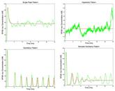

This is the home page for the biological cell modeling code ChemCell.
| Features | Documentation | Download | Latest features & bug fixes | Pictures & Movies |
| Thanks | Open source | Pizza.py Toolkit | Publications | Other codes |
ChemCell is a particle-based reaction/diffusion simulator designed for modeling protein networks in biological cells with spatial information. Compartments within the cell are bounded by membrane surfaces defined as geometric regions or connected triangles. Particles represent individual biomolecules and diffuse via Brownian motion in 3d and on 2d surfaces. Particles react with neighboring particles according to rules derived from chemical rate equations. Non-spatial models can also be run using an ODE solver or the Gillespie Stochastic Simulation Algorithm (SSA). Spatial simulations can be run in parallel as can multiple instances of non-spatial simluations for statistical averaging. The Pizza.py package of Python-based tools can create input files for ChemCell and visualize and plot its output.
ChemCell was developed at Sandia National Laboratories, a US Department of Energy facility, with funding from the DOE, acknowledged here. It is an open-source code, designed to be easy to modify and extend with new functionality. It is distributed freely under the terms of the GNU Public License (GPL).
The authors of ChemCell are Steve Plimpton and Alex Slepoy, who can be contacted at sjplimp at sandia.gov and alexander.sleopy at nnsa.doe.gov.
The ChemCell WWW site is hosted by Sandia, which has this Privacy and Security statement.
This is work with Jaewook Joo (Sandia). He developed a hybrid model of the NF-kB immune response network (by combining two models in the literature due to Alexander Hoffman and Tomasz Lipniacki). Triggered by receptor binding to a stimulant at the cell membrane, IKK is produced inside the cell which is the starting point for the portion of the network we modeled, which contains approximately 50 species and 70 reactions. Eventually NF-kB, a gene transcription factor, is produced and enters the nucleus. Due to negative feedback in the network, an oscillatory response of nuclear-NF-KB can result as it shuttles in and out of the nucleus.
This non-spatial 2-compartment model was simulated in ChemCell both as a continuum model (ODE solver) and a stochastic model (Gillespie SSA). Runs in batches of 1000 and 10,000 were performed while varying parameters in the model to perform senstivity analyses and classify the various kinds of responses. The image shows 4 plots for the different observed responses: sustained oscillatory, damped oscillatory, single-peaked, and hyperbolic (saturation to a maximum). The red curves are the ODE solutions; the green are stochastic. These results indicate the stochastic noise present in real cells can blur the distinction between the different responses and induce oscillations.
This paper has further details on the NF-kB model and the analyses we performed:
Sensitivity Analysis of a Computational Model of the IKK-NF-kB-A20 Signal Transduction Network, J. Joo, S. J. Plimpton, S. Martin, L. Swiler, J. L. Faulon, Annals of the New York Acadamey of Sciences, Volume on Reverse Engineering Biological Networks, 1115, 221-239 (2007). (abstract)